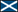
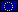

Links
Media
Recognition translates for first students earning Oregon Seal of Biliteracy in Native American languages (June 3, 2020)Students earn biliteracy diploma seals in Nez Perce, Umatilla languages (pg. 24-25) (June 3, 2020)
Graduation speaker becomes first student biliterate in Nez Perce (May 30, 2020)
Támayčt opened at Culture Camp (pg. 12-13) (July 31, 2019)
Celtic Resources
This is a collection of links I used as a grad student to web-based resources that might be of interest to Celticists. They are in no particular order and the flag choice is sometimes not wholly accurate. I haven't verified which still work.Dictionaries
eDIL (Old, Middle, Classical Irish)
Irish Dictionary Online
Father Dinneen's dictionary
Dwelly's Classic Scottish Gaelic Dictionary
Lexicelt (Welsh<>Irish dictionary)
Old Irish>English Word List
BBC Wales' dictionary
Yr Odliadur: Welsh Rhyming Dictionary
GPC Dictionary of the Welsh Language
Breton<>French
Pokorny online
Recordings
Discover Irish (Recordings and comparative grammatical features of various Irish dialects.)
Yale Endangered Languages database (Recordings for many languages)
Breton fieldwork recordings
Doegen Records Web Project
National Folklore Collection, UCD
Irish Pronunciation Database (Recordings of words in the three major dialect groups)
Written corpora
Early Irish Glossaries Database
Acmhainní Gaedhilge (A lot of resources for (Ulster) Irish and Scottish Gaelic.)
Celtic Inscribed Stones Project
TITUS Ogamica
CELT - Corpus of Electronic Texts
Thesaurus Linguae Hibernicae
Draenog: Resources for Welsh linguistics
The Milan Glosses Project
Lepontic Lexicon
Welsh Prose 1350-1425
13th Century Welsh Prose Manuscripts
Poems of Dafydd Ap Gwilym
Celtic Personal Names of Britain
ARBRES: Breton syntax
Celtic digital archive
Learning materials
Old Irish Online: Series Introduction
Old Irish Verbal Inflection
TITUS (lots and lots of materials)
Towards a Grammar of Middle Cornish
The Old Irish Verbal System (My favorite description)
Reading Middle Welsh